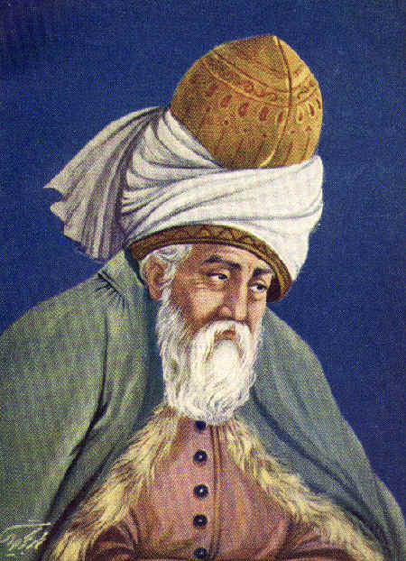
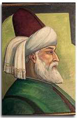

1207-1273
Tasavvuf edebiyatının önemli sanatçılarındandır.
Dine ve tasavvufa karşı derin bir ilgisi mevcuttur.
Hoşgörüsü ve hümanistik yanıyla ön plana çıkmıştır.
En ünlü eseri 'Mesnevi' dir.
Din konusunda her bireyin kendi seçimi olduğu ve dinde baskı olmadığı vurgusu üzerinde durmuştur.
Mevlana'nın Hayatı
Mevlâna 30 Eylül 1207 yılında bugün Afganistan sınırları içerisinde yer alan Horasan Ülkesi’nin Belh şehrinde doğmuştur. Mevlâna’nın babası Belh Şehrinin ileri gelenlerinden olup, sağlığında “Bilginlerin Sultânı” ünvanını almış olan Hüseyin Hatibî oğlu Bahâeddin Veled’tir. Annesi ise Belh Emiri Rükneddin’in kızı Mümine Hatun’dur. Sultânü’I-Ulemâ Bahaeddin Veled, bazı siyasi olaylar ve yaklaşmakta olan Moğol istilası nedeniyle Belh’den ayrılmak zorunda kalmıştır. Sultânü’I-Ulemâ 1212 veya 1213 yılllarında aile fertleri ve yakın dostları ile birlikte Belh’den ayrıldı.
Sultânü’I-Ulemâ’nın ilk durağı Nişâbur olmuştur. Nişâbur şehrinde tanınmış mutasavvıf Ferîdüddin Attar ile de karşılaştılar. Mevlâna burada küçük yaşına rağmen Ferîdüddin Attar’ın ilgisini çekmiş ve takdirlerini kazanmıştır. Sultânü’I Ulemâ Nişabur’dan Bağdat’a ve daha sonra Kûfe yolu ile Kâ’be’ye hareket etti. Hac farîzasını yerine getirdikten sonra, dönüşte Şam’a uğradı. Şam’dan sonra Malatya, Erzincan, Sivas, Kayseri, Niğde yolu ile Lârende’ye (Karaman) geldiler. Karaman’da Subaşı Emir Mûsâ’nın yaptırdıkları medreseye yerleştiler.
1222 yılında Karaman’a gelen Sultânü’/-Ulemâ ve ailesi burada 7 yıl kaldılar. Mevlâna 1225 yılında Şerefeddin Lala’nın kızı Gevher Hatun ile Karaman’da evlendi. Bu evlilikten Mevlâna’nın Sultan Veled ve Alâeddin Çelebi adlı iki oğlu oldu. Yıllar sonra Gevher Hatun’u kaybeden Mevlâna bir çocuklu dul olan Kerrâ Hatun ile ikinci evliliğini yaptı. Mevlâna’nın bu evlilikten de Muzaffereddin ve Emir Âlim Çelebi adlı iki oğlu ile Melike Hatun adlı bir kızı dünyaya geldi.
Bu yıllarda Anadolunun büyük bir kısmı Selçuklu Devleti’nin egemenliği altında idi. Konya’da bu devletin baş şehri idi. Konya sanat eserleri ile donatılmış, ilim adamları ve sanatkarlarla dolup taşmıştı. Kısaca Selçuklu Devleti en parlak devrini yaşıyordu ve Devletin hükümdarı Alâeddin Keykubâd idi. Alâeddin Keykubâd Sultânü’I-Ulemâ Bahaeddin Veled’i Karaman’dan Konya’ya davet etti ve Konya’ya yerleşmesini istedi.
Bahaeddin Veled Sultanın davetini kabul etti ve Konya’ya 3 Mayıs 1228 yılında ailesi ve dostları ile geldiler. Sultânü’l-Ulemâ 12 Ocak 1231 yılında Konya’da vefat etti. Sultânü’I-Ulemâ ölünce, talebeleri ve müridleri bu defa Mevlâna’nın çevresinde toplandılar. Mevlâna’yı babasının tek varisi olarak gördüler. Gerçekten de Mevlâna büyük bir ilim ve din bilgini olmuş, İplikçi Medresesi’nde vaazlar veriyordu. Vaazları kendisini dinlemeye gelenlerle dolup taşıyordu.
Yaşamını “Hamdım, piştim, yandım” sözleri ile özetleyen Mevlâna 17 Aralık 1273 Pazar günü Hakk’ ın rahmetine kavuştu.
Mevlana,17 Aralık 1273 yılında vefat edince Mevlâna'nın oğlu Sultan Veled Mevlâna'nın mezarı üzerine türbe yaptırmak isteyenlerin isteklerini kabul etmiştir. "Kubbe-i Hadra" (Yeşil Kubbe) denilen türbe dört fil ayağı (kalın sütun) üzerine 130.000 Selçukî dirhemine Mimar Tebrizli Bedrettin'e yaptırılmıştır. Bu tarihten sonra inşaî faaliyetler hiç bitmemiş 19. yüzyılın sonuna kadar yapılan eklemelerle devam etmiştir.
Ömer Biltekin ©